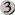

Theros¶
- Battlewise Valor
- Wskazany stwór dostaje +2/+2 do końca tury. Wróż 1. (Spójrz na wierzchnią kartę twojej biblioteki. Możesz położyć ową kartę na spodzie swojej biblioteki.)
- Cavalry Pegasus
Latanie
Ilekroć Cavalry Pegasus atakuje, każdy atakujący Human dostaje latanie do końca tury.
- Celestial Archon
Bestow

 (If you cast this card for its bestow cost, it’s an Aura spell with enchant creature. It becomes a creature again if it’s not attached to a creature.)
(If you cast this card for its bestow cost, it’s an Aura spell with enchant creature. It becomes a creature again if it’s not attached to a creature.)Latanie, pierwszy cios
Zauroczony stwór dostaje +4/+4 oraz ma latanie i pierwszy cios.
- Chained to the Rocks
Zaurocz górę, którą władasz
Kiedy Chained to the Rocks wchodzi na pole walki, wygnaj wskazanego stwora władanego przez przeciwnika dopóki Chained to the Rocks nie opuści pola walki. (Ów stwór wraca pod władanie swojego właściciela.)
- Chosen by Heliod
Zaurocz stwora
Kiedy Chosen by Heliod wchodzi na pole walki, dobierz kartę.
Zauroczony stwór dostaje +0/+2.
- Dauntless Onslaught
- Każdy z najwyżej dwóch wskazanych stworów dostaje +2/+2 do końca tury.
- Decorated Griffin
Latanie
 : Prevent the next 1 combat damage that would be dealt to you this turn.
: Prevent the next 1 combat damage that would be dealt to you this turn.- Divine Verdict
- Zniszcz wskazanego atakującego lub blokującego stwora.
- Elspeth, Sun's Champion
+1: Create three 1/1 white Soldier creature tokens.
−3: Destroy all creatures with power 4 or greater.
−7: You get an emblem with „Creatures you control get +2/+2 and have flying.”
- Ephara's Warden
 : Zaznacz wskazanego stwora o sile 3 lub mniejszej.
: Zaznacz wskazanego stwora o sile 3 lub mniejszej.- Evangel of Heliod
- When Evangel of Heliod enters the battlefield, create a number of 1/1 white Soldier creature tokens equal to your devotion to white. (Each in the mana costs of permanents you control counts toward your devotion to white.)
- Fabled Hero
Podwójny cios
Heroizm — Ilekroć rzucasz czar wskazujący Fabled Hero, umieść znacznik +1/+1 na Fabled Hero.
- Favored Hoplite
- Heroizm — Ilekroć rzucasz czar wskazujący Favored Hoplite, umieść znacznik +1/+1 na Favored Hoplite i zapobiegnij wszystkim obrażeniom, które mogłyby mu być zadane w tej turze.
- Gift of Immortality
Zaurocz stwora
Gdy zauroczony stwór umiera, przywróć ową kartę na pole walki pod władaniem jej właściciela. Przywróć Gift of Immortality na pole walki dołączone do owego stwora na początku następnego kroku końcowego.
- Glare of Heresy
- Wygnaj wskazany biały permanent.
- Gods Willing
- Wskazany stwór dostaje +2/+2 do końca tury. Wróż 1. (Spójrz na wierzchnią kartę twojej biblioteki. Możesz położyć ową kartę na spodzie twojej biblioteki.)
- Heliod, God of the Sun
Niezniszczalność
Dopóki twój kult białego jest mniejszy niż pięć, Heliod nie jest stworem (Każda
w kosztach many permanentów pod twoim władaniem wlicza się do twojego kultu białego.)Inne stwory pod twoim władaniem mają czujność.
 : Create a 2/1 white Cleric enchantment creature token.
: Create a 2/1 white Cleric enchantment creature token.- Heliod's Emissary
Bestow
 (If you cast this card for its bestow cost, it’s an Aura spell with enchant creature. It becomes a creature again if it’s not attached to a creature.)
(If you cast this card for its bestow cost, it’s an Aura spell with enchant creature. It becomes a creature again if it’s not attached to a creature.)Ilekroć Heliod’s Emissary lub zauroczony stwór atakuje, przekręć wskazanego stwora, którym włada przeciwnik.
Zauroczony stwór dostaje +3/+3.
- Hopeful Eidolon
Bestow 
(If you cast this card for its bestow cost, it’s an Aura spell with enchant creature. It becomes a creature again if it’s not attached to a creature.)Więź życia (Obrażanie zadane przez tego stwora powodują, że zyskujesz tyle samo życia.)
Zauroczony stwór dostaje +1/+1 i ma więź życia.
- Hundred-Handed One
Czujność
: Monstrosity 3. (If this creature isn’t monstrous, put three +1/+1 counters on it and it becomes monstrous.)Dopóki Hundred-Handed One jest monstrualny, ma zasięg i może blokować dodatkowych dziewięćdziesiąt dziewięć stworów w każdej walce.
- Lagonna-Band Elder
- Kiedy Lagonna-Band Elde wchodzi na pole walki, jeśli władasz urokiem, zyskujesz 3 życia.
- Last Breath
- Wygnaj wskazanego stwora o sile 2 lub mniejszej. Jego władca zyskuje 4 życia.
- Leonin Snarecaster
- Kiedy Leonin Snarecaster wchodzi na pole walki, możesz przekręcić wskazanego stwora.
- Observant Alseid
Bestow
 (If you cast this card for its bestow cost, it’s an Aura spell with enchant creature. It becomes a creature again if it’s not attached to a creature.)
(If you cast this card for its bestow cost, it’s an Aura spell with enchant creature. It becomes a creature again if it’s not attached to a creature.)Czujność
Zauroczony stwór dostaje +2/+2 i ma czujność.
- Ordeal of Heliod
Zaurocz stwora
Ilekroć zauroczony stwór atakuje, umieść na nim znacznik +1/+1. Następnie jeśli ma on trzy lub więcej znaczników +1/+1, poświęć Ordeal of Heliod.
Kiedy poświęcisz Ordeal of Heliod, zyskujesz 10 życia.
- Phalanx Leader
- Heroizm — Ilekroć rzucasz czar, który wskazuje Phalanx Leader, umieść znacznik +1/+1 na każdym stworze pod twoim władaniem.
- Ray of Dissolution
- Zniszcz wskazany urok. Zyskujesz 3 życia.
- Scholar of Athreos
 : Each opponent loses 1 life. You gain life equal to the life lost this way.
: Each opponent loses 1 life. You gain life equal to the life lost this way.- Setessan Battle Priest
- Heroizm — Ilekroć rzucasz czar wskazujący na Setessan Battle Priest, zyskujesz 2 życia.
- Setessan Griffin
Latanie
 : Setessan Griffin gets +2/+2 until end of turn. Activate this ability only once each turn.
: Setessan Griffin gets +2/+2 until end of turn. Activate this ability only once each turn.
- Soldier of the Pantheon
Ochrona przed wielokolorowym
Ilekroć przeciwnik rzuca wielokolorowy czar, dostajesz 1 życie.
- Spear of Heliod
Stwory pod twoim władaniem dostają +1/+1.
, : Destroy target creature that dealt damage to you this turn.
- Vanquish the Foul
- Zniszcz wskazanego stwora o sile 4 lub większej. Wróż 1. (Spójrz na wierzchnią kartę twojej biblioteki. Możesz położyć ową kartę na spodzie twojej biblioteki.)
- Wingsteed Rider
Latanie
Heroizm — Ilekroć rzucasz czar wskazujący na Wingsteed Rider, umieść znacznik +1/+1 na Wingsteed Rider.
- Annul
- Skontruj wskazany czar artefaktu lub uroku.
- Aqueous Form
Zaurocz stwora
Zauroczony stwór nie może być blokowany.
Ilekroć zauroczony stwór atakuje, wróż 1. (Spójrz na wierzchnią kartę twojej biblioteki. Możesz położyć ową kartę na spodzie twojej biblioteki.)
- Artisan of Forms
- Heroic — Whenever you cast a spell that targets Artisan of Forms, you may have Artisan of Forms become a copy of target creature, except it has this ability.
- Benthic Giant
- Antyklątwa (Ten stwór nie może być wskazywany przez czary lub zdolności władane przez twoich przeciwników.)
- Bident of Thassa
Ilekroć stwór pod twoim władaniem zada graczowi obrażenia bitewne, możesz dobrać kartę.
 , : Creatures your opponents control attack this turn if able.
, : Creatures your opponents control attack this turn if able.- Breaching Hippocamp
Błysk (Możesz rzucić ten czar zawsze, gdy można rzucić sztuczkę.)
Kiedy Breaching Hippocamp wchodzi na pole walki, odznacz innego wskazanego stwora pod twoim władaniem.
- Coastline Chimera
Latanie
: Coastline Chimera can block an additional creature this turn.- Crackling Triton
 , Sacrifice Crackling Triton: Crackling Triton deals 2 damage to any target.
, Sacrifice Crackling Triton: Crackling Triton deals 2 damage to any target.- Curse of the Swine
- Wygnaj X wskazanych stworów. Za każdego stwora wygnanego w ten sposób, jego władca tworzy żeton zielonego stwora Knur 2/2.
- Dissolve
- Skontruj wskazany czar. Wróż 1. (Spójrz na wierzchnią kartę twojej biblioteki. Możesz położyć ową kartę na spodzie twojej biblioteki.)
- Fate Foretold
Zaurocz stwora
Kiedy Fate Foretold wchodzi na pole walki, dobierz kartę.
Kiedy zauroczony stwór umiera, jego władca dobiera kartę.
- Gainsay
- Skontruj wskazany niebieski czar.
- Griptide
- Umieść wskazanego stwora na wierzchu biblioteki jego właściciela.
- Horizon Scholar
Latanie
Kiedy ta karta wejdzie na pole walki, wróż 2. (Spójrz na dwie wierzchnie karty twojej biblioteki, następnie umieść dowolne z nich na spodzie twojej biblioteki, a pozostałe na jej wierzchu w dowolnej kolejności.)
- Lost in a Labyrinth
- Wskazany stwór dostaje +2/+2 do końca tury. Wróż 1. (Spójrz na wierzchnią kartę twojej biblioteki. Możesz położyć ową kartę na spodzie twojej biblioteki.)
- Master of Waves
Ochrona przed czerwonym
Stwory Elemental pod twoim władaniem dostają +1/+1.
When Master of Waves enters the battlefield, create a number of 1/0 blue Elemental creature tokens equal to your devotion to blue. (Each
in the mana costs of permanents you control counts toward your devotion to blue.)- Meletis Charlatan
- , : The controller of target instant or sorcery spell copies it. That player may choose new targets for the copy.
- Mnemonic Wall
Obronność
Kiedy Mnemonic Wall wchodzi na pole walki możesz zwrócić wskazaną kartę sztuczki lub obrzędu z twojego cmentarza do twojej ręki.
- Nimbus Naiad
Bestow
(If you cast this card for its bestow cost, it’s an Aura spell with enchant creature. It becomes a creature again if it’s not attached to a creature.)Latanie
Zauroczony stwór dostaje +2/+2 i ma latanie.
- Omenspeaker
- Kiedy ta karta wejdzie na pole walki, wróż 2. (Spójrz na dwie wierzchnie karty twojej biblioteki, następnie umieść dowolne z nich na spodzie twojej biblioteki, a pozostałe na jej wierzchu w dowolnej kolejności.)
- Ordeal of Thassa
Zaurocz stwora
Ilekroć zauroczony stwór atakuje, umieść na nim znacznik +1/+1. Następnie jeśli ma on trzy lub więcej znaczników +1/+1, poświęć Ordeal of Thassa.
Kiedy poświęcisz Ordeal of Thassa, dobierz dwie karty.
- Prescient Chimera
Latanie
Ilekroć rzucasz czar sztuczki lub obrzędu, wróż 1. (Spójrz na wierzchnią kartę twojej biblioteki. Możesz położyć ową kartę na spodzie twojej biblioteki.)
- Prognostic Sphinx
Latanie
Odrzuć kartę: Prognostic Sphinx dostaje antyklątwę do końca tury. Zaznacz go.
Kiedy Prognostic Sphinx atakuje, wróż 3. (Spójrz na trzy wierzchnie karty twojej biblioteki, następnie umieść dowolną liczbę z nich na spodzie twojej biblioteki, a pozostałe na wierzchu w dowolnej kolejności.)
- Sea God's Revenge
- Przywróć najwyżej trzy wskazane stwory, którymi władają twoi przeciwnicy, do rąk ich właścicieli. Wróż 1. (Spójrz na wierzchnią kartę twojej biblioteki. Możesz położyć ową kartę na spodzie twojej biblioteki.)
- Sealock Monster
Sealock Monster nie może atakować dopóki broniący się gracz nie włada Wyspą.
: Monstrosity 3. (If this creature isn’t monstrous, put three +1/+1 counters on it and it becomes monstrous.)Kiedy Sealock Monster staje się monstrualny, wskazany ląd staje się dodatkowo Wyspą.
- Shipbreaker Kraken
- : Monstrosity 4. (If this creature isn’t monstrous, put four +1/+1 counters on it and it becomes monstrous.)
Kiedy Shipbreaker Kraken staje się monstrualny, przekręć najwyżej cztery wskazane stwory. Owe stwory nie odznaczą się podczas kroku odkręcania swoich władców dopóki władasz Shipbreaker Krakenem.
- Stymied Hopes
- Skontruj wskazany czar dopóki jego władca nie zapłaci . Wróż 1. (Spójrz na wierzchnią kartę twojej biblioteki. Możesz położyć ową kartę na spodzie twojej biblioteki.)
- Swan Song
- Counter target enchantment, instant, or sorcery spell. Its controller creates a 2/2 blue Bird creature token with flying.
- Thassa, God of the Sea
Niezniszczalność
Dopóki twój kult niebieskiego jest mniejszy niż pięć, Thassa nie jest stworem (Każda
w kosztach many permanentów pod twoim władaniem wlicza się do twojego kultu niebieskiego.)Na początku twojego kroku utrzymania, wróż 1.
: Target creature you control can’t be blocked this turn.- Thassa's Bounty
- Dobierz trzy karty. Wskazany gracz umieszcza trzy wierzchnie karty swojej biblioteki w swoim cmentarzu.
- Thassa's Emissary
Bestow
(If you cast this card for its bestow cost, it’s an Aura spell with enchant creature. It becomes a creature again if it’s not attached to a creature.)Ilekroć Thassa’s Emissary lub zauroczony stwór zada graczowi obrażenia bitewne, dobierz kartę.
Zauroczony stwór dostaje +3/+3.
- Triton Fortune Hunter
- Heroizm — Ilekroć rzucasz czar wskazujący na Triton Fortune Hunter, dobierz kartę.
- Triton Tactics
- Każdy z nie więcej niż dwóch wskazanych stworów dostaje do końca tury +0/+3. Odkręć owe stwory. W chwili najbliższego końca walki w tej turze, przekręć każdego stwora, który był blokowany przez te stwory i owe stwory nie odznaczą się w następnym kroku odkręcania ich władcy.
- Vaporkin
Latanie
Vaporkin może blokować tylko stwory z lataniem.
- Voyage's End
- Przywróć wskazanego stwora do ręki jego właściciela. Wróż 1. (Spójrz na wierzchnią kartę twojej biblioteki. Możesz położyć ową kartę na spodzie twojej biblioteki.)
- Wavecrash Triton
- Heroizm — Ilekroć rzucasz czar wskazujący na Wavecrash Triton, przekręć wskazanego stwora, którym włada przeciwnik. Ów stwór nie odznacza się podczas następnego kroku odkręcania jego władcy.
- Abhorrent Overlord
Latanie
When Abhorrent Overlord enters the battlefield, create a number of 1/1 black Harpy creature tokens with flying equal to your devotion to black. (Each
in the mana costs of permanents you control counts toward your devotion to black.)Na początku twojego kroku utrzymania, poświęć stwora.
- Agent of the Fates
Dotyk śmierci
Heroizm — Ilekroć rzucasz czar wskazujący na Agent of the Fates, każdy z przeciwników poświęca stwora.
- Asphodel Wanderer
- : Regenerate Asphodel Wanderer.
- Baleful Eidolon
Bestow
(If you cast this card for its bestow cost, it’s an Aura spell with enchant creature. It becomes a creature again if it’s not attached to a creature.)Dotyk śmierci (Dowolna ilość obrażeń zadana stworowi przez tę kartę wystarcza, aby został zniszczony.)
Zauroczony stwór dostaje +1/+1 i ma dotyk śmierci.
- Blood-Toll Harpy
Latanie
Kiedy Blood-Toll Harpy wchodzi na pole walki, każdy gracz traci 1 życie.
- Boon of Erebos
- Wskazany stwór dostaje +2/+0 do końca tury. Zregeneruj go. Tracisz 2 życia.
- Cavern Lampad
Bestow
(If you cast this card for its bestow cost, it’s an Aura spell with enchant creature. It becomes a creature again if it’s not attached to a creature.)Zastraszenie (Ten stwór nie może być blokowany chyba że przez stwory artefaktyczne lub współdzielące z nim kolor.)
Zauroczony stwór dostaje +2/+2 i ma zastraszanie.
- Cutthroat Maneuver
- Każdy z najwyżej dwóch wskazanych stworów dostaje do końca tury +1/+1 oraz więź życia.
- Dark Betrayal
- Zniszcz wskazanego czarnego stwora.
- Disciple of Phenax
- When Disciple of Phenax enters the battlefield, target player reveals a number of cards from their hand equal to your devotion to black. You choose one of them. That player discards that card. (Each in the mana costs of permanents you control counts toward your devotion to black.)
- Erebos, God of the Dead
Niezniszczalność
Dopóki twój kult czarnego jest mniejszy niż pięć, Erebos nie jest stworem (Każda
w kosztach many permanentów pod twoim władaniem wlicza się do twojego kultu czarnego.)Twoi przeciwnicy nie mogą zyskiwać życia.
, zapłać 2 życia: Dobierz kartę.- Erebos's Emissary
Bestow
(If you cast this card for its bestow cost, it’s an Aura spell with enchant creature. It becomes a creature again if it’s not attached to a creature.)Odrzuć kartę stwora: Erebos’s Emissary dostaje +2/+2 do końca tury. Jeśli Erebos’s Emissary jest Aurą, zamiast tego zauroczony stwór dostaje +2/+2 do końca tury.
Zauroczony stwór dostaje +3/+3.
- Fleshmad Steed
- Ilekroć umiera inny stwór, przekręć Fleshmad Steed.
- Gray Merchant of Asphodel
- Kiedy Gray Merchant of Asphodel wchodzi na pole walki, każdy przeciwnik traci X życia, gdzie X jest twoim kultem czarnego. Zyskujesz tyle życia, ile stracono w ten sposób. (Każda w kosztach many permanentów, którymi władasz wlicza się do twojego kultu czarnego.)
- Hero's Downfall
- Zniszcz wskazanego stwora lub wędrowca.
- Hythonia the Cruel
Dotyk śmierci
: Monstrosity 3. (If this creature isn’t monstrous, put three +1/+1 counters on it and it becomes monstrous.)Kiedy Hythonia the Cruel staje się monstrualny, zniszcz wszystkie stwory nie mające typu Gorgon.
- Insatiable Harpy
- Latanie, więź życia
- Keepsake Gorgon
Dotyk śmierci
: Monstrosity 1. (If this creature isn’t monstrous, put a +1/+1 counter on it and it becomes monstrous.)Kiedy Keepsake Gorgon staje się monstrualny, zniszcz wskazanego stwora nie będącego Gorgonem, którym włada przeciwnik.
- Lash of the Whip
- Wskazany stwór dostaje -4/-4 do końca tury.
- Loathsome Catoblepas
- : Loathsome Catoblepas must be blocked this turn if able.
Kiedy Loathsome Catoblepas umiera, wskazany stwór, którym włada przeciwnik, dostaje -3/-3 do końca tury.
- March of the Returned
- Zwróć co najwyżej dwie wskazane karty stworów z twojego cmentarza do twojej ręki.
- Mogis's Marauder
- When Mogis’s Marauder enters the battlefield, up to X target creatures each gain intimidate and haste until end of turn, where X is your devotion to black. (A creature with intimidate can’t be blocked except by artifact creatures and/or creatures that share a color with it. Each in the mana costs of permanents you control counts toward your devotion to black.)
- Nighthowler
Bestow
(If you cast this card for its bestow cost, it’s an Aura spell with enchant creature. It becomes a creature again if it’s not attached to a creature.)Nighthowler oraz zauroczony stwór dostają +X/+X każdy, gdzie X jest równe liczbie kart stworów we wszystkich cmentarzach.
- Ordeal of Erebos
Zaurocz stwora
Ilekroć zauroczony stwór atakuje, umieść na nim znacznik +1/+1. Następnie jeśli ma on trzy lub więcej znaczników +1/+1, poświęć Ordeal of Erebos.
Kiedy poświęcasz Ordeal of Erebos, wskazany gracz odrzuca dwie karty.
- Pharika's Cure
- Pharika’s Cure zadaje 2 obrażenia wskazanemu stworowi, a ty zyskujesz 2 życia.
- Read the Bones
- Wróż 2, następnie dobierz dwie karty. Tracisz 2 życia. (By wróżyć 2, spójrz na dwie wierzchnie karty twojej biblioteki, następnie umieść dowolną liczbę z nich na spodzie twojej biblioteki, a pozostałe na wierzchu w dowolnej kolejności.)
- Rescue from the Underworld
Jako dodatkowy koszt rzucenia tego czaru, poświęć stwora.
Wskaż kartę stwora w twoim cmentarzu. Zwróć ową kartę oraz poświęconą kartę na pole walki pod twoim władaniem na początku twojego najbliższego kroku utrzymania. Wygnaj Rescue from the Underworld.
- Returned Centaur
- When Returned Centaur enters the battlefield, target player puts the top four cards of their library into their graveyard.
- Returned Phalanx
Obronność
: Returned Phalanx can attack this turn as though it didn’t have defender.- Scourgemark
Zaurocz stwora
Kiedy Scourgemark wchodzi na pole walki, dobierz kartę.
Zauroczony stwór dostaje +1/+0.
- Sip of Hemlock
- Zniszcz wskazanego stwora. Jego władca traci 2 życia.
- Thoughtseize
- Target player reveals their hand. You choose a nonland card from it. That player discards that card. You lose 2 life.
- Tormented Hero
Tormented Hero wchodzi na pole walki przekręcony.
Heroizm — Ilekroć rzucasz czar wskazujący na Tormented Hero, każdy przeciwnik traci 1 życie. Zyskujesz tyle życia, ile stracono w ten sposób.
- Viper's Kiss
Zaurocz stwora
Zauroczony stwór dostaje -1/-1 i jego aktywowane zdolności nie mogą być aktywowane.
- Whip of Erebos
Stwory pod twoim władaniem mają więź życia
, : Return target creature card from your graveyard to the battlefield. It gains haste. Exile it at the beginning of the next end step. If it would leave the battlefield, exile it instead of putting it anywhere else. Activate this ability only any time you could cast a sorcery.- Akroan Crusader
- Heroic — Whenever you cast a spell that targets Akroan Crusader, create a 1/1 red Soldier creature token with haste.
- Anger of the Gods
- Anger of the Gods zadaje każdemu stworowi 3 obrażenia. Jeśli stwór, który otrzymał obrażenia w ten sposób, miałby umrzeć w tej turze, zostaje zamiast tego wypędzony.
- Arena Athlete
- Heroizm — Ilekroć rzucasz czar wskazujący na Arena Athlete, wskazany stwór, którym włada przeciwnik, nie może blokować w tej turze.
- Boulderfall
- Boulderfall deals 5 damage divided as you choose among any number of targets.
- Coordinated Assault
- Każdy z najwyżej dwóch wskazanych stworów dostaje do końca tury +1/+0 oraz pierwszy cios.
- Deathbellow Raider
Deathbellow Raider attacks each combat if able.
: Regenerate Deathbellow Raider.- Demolish
- Zniszcz wskazany artefakt lub ląd.
- Dragon Mantle
Zaurocz stwora
Kiedy Dragon Mantle wchodzi na pole walki, dobierz kartę.
Enchanted creature has „
: This creature gets +1/+0 until end of turn.”- Ember Swallower
- : Monstrosity 3. (If this creature isn’t monstrous, put three +1/+1 counters on it and it becomes monstrous.)
Kiedy Ember Swallower staje się monstrualny, każdy gracz poświęca trzy lądy.
- Fanatic of Mogis
- Kiedy Fanatic of Mogis wchodzi na pole walki, zadaje każdemu przeciwnikowi po tyle obrażeń, ile wynosi twój kult czerwonego. (Każda w kosztach many permanentów, którymi władasz wlicza się do twojego kultu czerwonego.)
- Firedrinker Satyr
Ilekroć Firedrinker Satyr otrzymuje obrażenia, zadaje tyle samo obrażeń tobie.
: Firedrinker Satyr gets +1/+0 until end of turn and deals 1 damage to you.- Flamespeaker Adept
- Ilekroć wróżysz, Flamespeaker Adept dostaje do końca tury +2/+0 oraz pierwszy cios.
- Hammer of Purphoros
Stwory pod twoim władaniem mają pośpiech.
, , Sacrifice a land: Create a 3/3 colorless Golem enchantment artifact creature token.- Ill-Tempered Cyclops
Tratowanie
: Monstrosity 3. (If this creature isn’t monstrous, put three +1/+1 counters on it and it becomes monstrous.)- Labyrinth Champion
- Heroic — Whenever you cast a spell that targets Labyrinth Champion, Labyrinth Champion deals 2 damage to any target.
- Lightning Strike
- Ten czar zadaje 3 obrażenia dowolnemu celowi.
- Magma Jet
- Magma Jet deals 2 damage to any target. Scry 2.
- Messenger's Speed
Zaurocz stwora
Zauroczony stwór ma tratowanie i pośpiech.
- Minotaur Skullcleaver
Pośpiech
Kiedy Minotaur Skullcleaver wchodzi na pole walki, dostaje do końca tury +2/+0.
- Ordeal of Purphoros
Zaurocz stwora
Ilekroć zauroczony stwór atakuje, umieść na nim znacznik +1/+1. Następnie jeśli ma on trzy lub więcej znaczników +1/+1, poświęć Ordeal of Purphoros.
When you sacrifice Ordeal of Purphoros, it deals 3 damage to any target.
- Peak Eruption
- Zniszcz wskazaną Górę. Peak Eruption zadaje władcy owego lądu 3 obrażenia.
- Portent of Betrayal
- Przejmij władanie nad wskazanym stworem do końca tury. Odkręć tego stwora. Dostaje on pośpiech do końca tury. Wróż 1. (Spójrz na wierzchnią kartę twojej biblioteki. Możesz położyć ową kartę na spodzie twojej biblioteki.)
- Priest of Iroas
- , Sacrifice Priest of Iroas: Destroy target enchantment.
- Purphoros, God of the Forge
Niezniszczalność
Dopóki twój kult czerwonego jest mniejszy niż pięć, Purphoros nie jest stworem.
Ilekroć na pole walki wchodzi stwór pod twoje władanie, Purphoros zadaje 2 obrażenia każdemu przeciwnikowi.
: Creatures you control get +1/+0 until end of turn.- Purphoros's Emissary
Bestow
(If you cast this card for its bestow cost, it’s an Aura spell with enchant creature. It becomes a creature again if it’s not attached to a creature.)Złowrogość (Ten stwór nie może być zablokowany, chyba że przez co najmniej dwa stwory.)
Enchanted creature gets +3/+3 and has menace.
- Rage of Purphoros
- Rage of Purphoros zadaje 4 obrażenia wskazanemu stworowi. Ów stwór nie może być regenerowany w tej turze. Wróż 1. (Spójrz na wierzchnią kartę twojej biblioteki. Możesz położyć ową kartę na spodzie twojej biblioteki.)
- Rageblood Shaman
Tratowanie
Inne stwory Minotaur pod twoim władaniem dostają +1/+1 i mają tratowanie.
- Satyr Rambler
- Tratowanie
- Spark Jolt
- Spark Jolt deals 1 damage to any target. Scry 1. (Look at the top card of your library. You may put that card on the bottom of your library.)
- Spearpoint Oread
Bestow
(If you cast this card for its bestow cost, it’s an Aura spell with enchant creature. It becomes a creature again if it’s not attached to a creature.)Pierwszy cios
Zauroczony stwór dostaje +2/+2 i ma pierwszy cios.
- Stoneshock Giant
- : Monstrosity 3. (If this creature isn’t monstrous, put three +1/+1 counters on it and it becomes monstrous.)
Kiedy Stoneshock Giant staje się monstrualne, stwory bez latania, którymi władają przeciwnicy, nie mogą blokować w tej turze.
- Stormbreath Dragon
Latanie, pośpiech, ochrona przed białym
: Monstrosity 3. (If this creature isn’t monstrous, put three +1/+1 counters on it and it becomes monstrous.)Kiedy Stormbreath Dragon staje się monstrualny, zadaje każdemu przeciwnikowi tyle obrażeń, ile kart znajduje się w ręce owego gracza.
- Titan of Eternal Fire
- Each Human creature you control has „, : This creature deals 1 damage to any target.”
- Titan's Strength
- Wskazany stwór dostaje +3/+1 do końca tury. Wróż 1. (Spójrz na wierzchnią kartę twojej biblioteki. Możesz położyć ową kartę na spodzie twojej biblioteki.)
- Two-Headed Cerberus
- Podwójny cios (Ten stwór zadaje obrażenia w pierwszym ciosie oraz normalnie.)
- Wild Celebrants
- Kiedy Wild Celebrants wchodzi na pole walki, możesz zniszczyć wskazany artefakt.
- Agent of Horizons
- : Agent of Horizons can’t be blocked this turn.
- Anthousa, Setessan Hero
- Heroizm — Ilekroć rzucasz czar wskazujący na Anthousa, Setessan Hero, każdy z najwyżej trzech wskazanych lądów pod twoim władaniem staje się stworem Warrior 2/2 i nadal pozostaje lądem.
- Arbor Colossus
Zasięg
: Monstrosity 3. (If this creature isn’t monstrous, put three +1/+1 counters on it and it becomes monstrous.)Kiedy Arbor Colossus staje się monstrualny, zniszcz wskazanego stwora z lataniem, którym włada przeciwnik.
- Artisan's Sorrow
- Zniszcz wskazany artefakt lub urok. Wróż 2. (By wróżyć 2, spójrz na dwie wierzchnie karty twojej biblioteki, następnie umieść dowolną liczbę z nich na spodzie twojej biblioteki, a pozostałe na wierzchu w dowolnej kolejności.)
- Boon Satyr
Błysk
Bestow
(If you cast this card for its bestow cost, it’s an Aura spell with enchant creature. It becomes a creature again if it’s not attached to a creature.)Zauroczony stwór dostaje +4/+2.
- Bow of Nylea
Atakujące stwory pod twoim władaniem mają dotyk śmierci.
, : Choose one —- Put a +1/+1 counter on target creature.
- Bow of Nylea deals 2 damage to target creature with flying.
- Zyskujesz 3 życia.
- Put up to four target cards from your graveyard on the bottom of your library in any order.
- Centaur Battlemaster
- Heroizm — Ilekroć rzucasz czar wskazujący na Centaur Battlemaster, umieść trzy znaczniki +1/+1 na Centaur Battlemaster.
- Commune with the Gods
- Ujawnij pięć wierzchnich kart twojej biblioteki. Możesz umieścić kartę stwora lub uroku spośród nich w twojej ręce. Umieść pozostałe w twoim cmentarzu.
- Defend the Hearth
- Zażegnaj wszystkie obrażenia bitewne, które mogłyby zostać zadane graczom w tej turze.
- Fade into Antiquity
- Wygnaj wskazany artefakt lub urok.
- Feral Invocation
Błysk (Możesz rzucić ten czar zawsze, gdy można rzucić sztuczkę.)
Zaurocz stwora
Zauroczony stwór dostaje +2/+2.
- Hunt the Hunter
- Wskazany zielony stwór pod twoim władaniem dostaje +2/+2 do końca tury. Bije się on ze wskazanym zielonym stworem, którym włada przeciwnik.
- Karametra's Acolyte
- : Add an amount of equal to your devotion to green. (Each in the mana costs of permanents you control counts toward your devotion to green.)
- Leafcrown Dryad
Bestow
(If you cast this card for its bestow cost, it’s an Aura spell with enchant creature. It becomes a creature again if it’s not attached to a creature.)Zasięg
Zauroczony stwór dostaje +2/+2 i ma zasięg.
- Mistcutter Hydra
Ten czar nie może być skontrowany.
Pośpiech, ochrona przed niebieskim
Mistcutter Hydra wchodzi na pole walki z X znacznikami +1/+1.
- Nemesis of Mortals
This spell costs
less to cast for each creature card in your graveyard. : Monstrosity 5. This ability costs less to activate for each creature card in your graveyard. (If this creature isn’t monstrous, put five +1/+1 counters on it and it becomes monstrous.)
: Monstrosity 5. This ability costs less to activate for each creature card in your graveyard. (If this creature isn’t monstrous, put five +1/+1 counters on it and it becomes monstrous.)- Nessian Asp
Zasięg
: Monstrosity 4. (If this creature isn’t monstrous, put four +1/+1 counters on it and it becomes monstrous.)
- Nylea, God of the Hunt
Niezniszczalność
Dopóki twój kult zielonego jest mniejszy niż pięć, Nylea nie jest stworem (Każda
w kosztach many permanentów pod twoim władaniem wlicza się do twojego kultu zielonego.)Inne stwory pod twoim władaniem mają tratowanie.
: Target creature gets +2/+2 until end of turn.- Nylea's Disciple
- Kiedy Nylea’s Disciple wchodzi na pole walki, zyskujesz tyle życia, ile wynosi twój kult zielonego. (Każda w kosztach many permanentów, którymi władasz wlicza się do twojego kultu zielonego.)
- Nylea's Emissary
Bestow
(If you cast this card for its bestow cost, it’s an Aura spell with enchant creature. It becomes a creature again if it’s not attached to a creature.)Tratowanie
Zauroczony stwór dostaje +3/+3 i ma tratowanie.
- Nylea's Presence
Zaurocz ląd
Kiedy Nylea’s Presence wchodzi na pole walki, dobierz kartę.
Zauroczony ląd ma dodatkowo typ każdego zwykłego lądu.
- Ordeal of Nylea
Zaurocz stwora
Ilekroć zauroczony stwór atakuje, umieść na nim znacznik +1/+1. Następnie jeśli ma on trzy lub więcej znaczników +1/+1, poświęć Ordeal of Nylea.
Kiedy poświęcasz Ordeal of Nylea, poszukaj w twojej bibliotece najwyżej dwóch kart zwykłych lądów, umieść je na polu walki przekręcone, a następnie przetasuj twoją bibliotekę.
- Polukranos, World Eater
 : Monstrosity X. (If this creature isn’t monstrous, put X +1/+1 counters on it and it becomes monstrous.)
: Monstrosity X. (If this creature isn’t monstrous, put X +1/+1 counters on it and it becomes monstrous.)Kiedy Polukranos, World Eater staje się monstrualny, zadaje on X obrażeń rozdzielonych według twojej woli pomiędzy dowolną liczbę wskazanych stworów władanych przez twoich przeciwników. Każdy z owych stworów zadaje Polukranosowi obrażenia równe swojej sile.
- Reverent Hunter
- Kiedy Reverent Hunter wchodzi na pole walki, umieść na nim tyle znaczników +1/+1, ile wynosi twój kult zielonego. (Każda w kosztach many permanentów, którymi władasz wlicza się do twojego kultu zielonego.)
- Satyr Hedonist
- , Sacrifice Satyr Hedonist: Add .
- Satyr Piper
- : Target creature must be blocked this turn if able.
- Savage Surge
- Wskazany stwór dostaje +2/+2 do końca tury. Odkręć owego stwora.
- Sedge Scorpion
- Dotyk śmierci (Dowolna ilość obrażeń zadana stworowi przez tę kartę wystarcza, aby został zniszczony.)
- Shredding Winds
- Shredding Winds zadaje 7 obrażeń wskazanemu stworowi z lataniem.
- Staunch-Hearted Warrior
- Heroizm — Ilekroć rzucasz czar wskazujący na Staunch-Hearted Warrior, umieść dwa znaczniki +1/+1 na Staunch-Hearted Warrior.
- Sylvan Caryatid
Obronność, antyklątwa
: Dostajesz jedną manę dowolnego koloru.- Time to Feed
- Choose target creature an opponent controls. When that creature dies this turn, you gain 3 life. Target creature you control fights that creature. (Each deals damage equal to its power to the other.)
- Voyaging Satyr
- : Odkręć wskazany ląd.
- Vulpine Goliath
- Tratowanie
- Warriors' Lesson
- Do końca tury najwyżej dwa wskazane stwory pod twoim władaniem dostają „Ilekroć ten stwór zadaje graczowi obrażenia bitewne, dobierz kartę.”
- Akroan Hoplite
- Ilekroć Akroan Hoplite atakuje, dostaje on +X/+0 do końca tury, gdzie X jest liczbą atakujących stworów, którymi władasz.
- Anax and Cymede
Pierwszy cios, czujność
Heroizm — Ilekroć rzucasz czar wskazujący na Anax and Cymede, stwory pod twoim władaniem dostają +1/+1 oraz tratowanie do końca tury.
- Ashen Rider
Latanie
Ilekroć Ashen Rider wchodzi na pole walki lub umiera, wypędź wskazany permanent.
- Ashiok, Nightmare Weaver
+2: Wygnaj trzy wierzchnie karty z biblioteki wskazanego przeciwnika.
−X: Put a creature card with converted mana cost X exiled with Ashiok, Nightmare Weaver onto the battlefield under your control. That creature is a Nightmare in addition to its other types.
−10: Exile all cards from all opponents» hands and graveyards.
- Battlewise Hoplite
- Heroizm — Ilekroć rzucasz czar wskazujący na Battlewise Hoplite, umieść znacznik +1/+1 na Battlewise Hoplite, a następnie wróż 1. (By wróżyć 1, spójrz na wierzchnią kartę twojej bilbioteki, następnie możesz położyć ową kartę na spodzie twojej biblioteki.)
- Chronicler of Heroes
- Kiedy Chronicler of Heroes wchodzi na pole walki, dobierz kartę jeśli władasz stworem posiadającym znacznik +1/+1.
- Daxos of Meletis
Daxos of Meletis nie może być blokowany przez stwory o sile 3 lub większej.
Whenever Daxos of Meletis deals combat damage to a player, exile the top card of that player’s library. You gain life equal to that card’s converted mana cost. Until end of turn, you may cast that card and you may spend mana as though it were mana of any color to cast that spell.
- Destructive Revelry
- Zniszcz wskazany artefakt lub urok. Niszczycielska Hulanka zadaje 2 obrażenia władcy owego permanentu.
- Fleecemane Lion
- : Monstrosity 1. (If this creature isn’t monstrous, put a +1/+1 counter on it and it becomes monstrous.)
Dopóki Fleecemane Lion jest monstrualny, ma antyklątwę i niezniszczalność.
- Horizon Chimera
Błysk
Latanie, tratowanie
Ilekroć dobierasz kartę, zyskujesz 1 życie.
- Kragma Warcaller
Stwory Minotaur pod twoim władaniem mają pośpiech.
Ilekroć Minotaur pod twoim władaniem atakuje, dostaje on +2/+0 do końca tury.
- Medomai the Ageless
Latanie
Ilekroć Medomai the Ageless zadaje graczowi obrażenia bitewne, weź dodatkową turę po bieżącej.
Medomai the Ageless nie może atakować podczas dodatkowych tur.
- Pharika's Mender
- Kiedy Pharika’s Mender wchodzi na pole walki, możesz przywrócić wskazaną kartę stwora lub uroku z twojego cmentarza do twojej ręki.
- Polis Crusher
Tratowanie, ochrona przed urokami
: Monstrosity 3. (If this creature isn’t monstrous, put three +1/+1 counters on it and it becomes monstrous.)Ilekroć Polis Crusher zadaje graczowi obrażenia bitewne, jeśli Polis Crusher jest monstrualny, zniszcz wskazany urok, którym włada ów gracz.
- Prophet of Kruphix
Odkręć wszystkie stwory i lądy pod twoim władaniem podczas kroku odkręcania każdego innego gracza.
You may cast creature spells as though they had flash.
- Psychic Intrusion
- Target opponent reveals their hand. You choose a nonland card from that player’s graveyard or hand and exile it. You may cast that card for as long as it remains exiled, and you may spend mana as though it were mana of any color to cast that spell.
- Reaper of the Wilds
Ilekroć umiera inny stwór, wróż 1. (Spójrz na wierzchnią kartę twojej biblioteki. Możesz położyć ową kartę na spodzie twojej biblioteki.)
: Reaper of the Wilds dostaje dotyk śmierci do końca tury.: Reaper of the Wilds gains hexproof until end of turn.- Sentry of the Underworld
Latanie, czujność
, Pay 3 life: Regenerate Sentry of the Underworld.- Shipwreck Singer
Latanie
: Target creature an opponent controls attacks this turn if able., : Attacking creatures get -1/-1 until end of turn.- Spellheart Chimera
Latanie, tratowanie
Spellheart Chimera’s ma siłę równą liczbie kart sztuczek i obrzędów w twoim cmentarzu.
- Steam Augury
- Ujawnij pięć wierzchnich kart twojej biblioteki i rozdziel je na dwa stosy. Przeciwnik wybiera jeden z tych stosów. Umieść ów stos w twojej ręce, a pozostały w twoim cmentarzu.
- Triad of Fates
- , : Umieść znacznik przeznaczenia na wskazanym stworze., : Wygnaj wskazanego stwora posiadającego znacznik przeznaczenia, a następnie przywróć go na pole walki pod władaniem jego właściciela., : Wygnaj wskazanego stwora posiadającego znacznik przeznaczenia. Jego władca dobiera dwie karty.
- Tymaret, the Murder King
- , Sacrifice another creature: Tymaret, the Murder King deals 2 damage to target player or planeswalker., Sacrifice a creature: Return Tymaret from your graveyard to your hand.
- Underworld Cerberus
Underworld Cerberus nie może być blokowany przez mniej niż trzy stwory.
Karty w cmentarzach nie mogą być wskazywane przez czary lub zdolności.
When Underworld Cerberus dies, exile it and each player returns all creature cards from their graveyard to their hand.
- Xenagos, the Reveler
+1: Add X mana in any combination of
and/or , where X is the number of creatures you control.0: Create a 2/2 red and green Satyr creature token with haste.
−6: Exile the top seven cards of your library. You may put any number of creature and/or land cards from among them onto the battlefield.
- Akroan Horse
Obronność
Kiedy Akroan Horse wchodzi na pole walki, przeciwnik zyskuje władanie nad nim.
Na początku twojego kroku utrzymania, każdy przeciwnik tworzy żeton białego stwora Piechur 1/1.
- Anvilwrought Raptor
- Latanie, pierwszy cios
- Burnished Hart
- , poświęć Burnished Hart: Poszukaj w twojej bibliotece najwyżej dwie karty zwykłych lądów, umieść je na polu walki przekręcone, a następnie przetasuj twoją bibliotekę.
- Colossus of Akros
Obronność, niezniszczalność
 : Monstrualność 10. (Jeśli ten stwór nie jest monstrualny, umieść na nim dziesięć znaczników +1/+1 i staje się on monstrualny.)
: Monstrualność 10. (Jeśli ten stwór nie jest monstrualny, umieść na nim dziesięć znaczników +1/+1 i staje się on monstrualny.)Dopóki Colossus of Akros jest monstrualny, ma tratowanie i może atakować jakby nie miał obronności.
- Flamecast Wheel
- , , Sacrifice Flamecast Wheel: It deals 3 damage to target creature.
- Fleetfeather Sandals
Wyposażony stwór ma latanie i pośpiech.
Wyposaż
(: Dołącz do wskazanego stwora pod twoim władaniem. Wyposaż wyłącznie jako obrzęd.)- Guardians of Meletis
- Obronność (Ten stwór nie może atakować.)
- Opaline Unicorn
- : Dostajesz jedną manę dowolnego koloru.
- Prowler's Helm
Wyposażony stwór może być blokowany wyłącznie przez Ściany.
Wyposaż
- Pyxis of Pandemonium
- : Each player exiles the top card of their library face down., , Sacrifice Pyxis of Pandemonium: Each player turns face up all cards they own exiled with Pyxis of Pandemonium, then puts all permanent cards among them onto the battlefield.
- Traveler's Amulet
- , poświęć ten artefakt.: Poszukaj w twojej bibliotece karty bazowego lądu, ujawnij ją i dołóż do twojej ręki. Następnie przetasuj twoją bibliotekę.
- Witches' Eye
Equipped creature has „
, : Scry 1.” (To scry 1, look at the top card of your library, then you may put that card on the bottom of your library.)Wyposaż
- Nykthos, Shrine to Nyx
- : Dostajesz
 ., : Choose a color. Add an amount of mana of that color equal to your devotion to that color. (Your devotion to a color is the number of mana symbols of that color in the mana costs of permanents you control.)
., : Choose a color. Add an amount of mana of that color equal to your devotion to that color. (Your devotion to a color is the number of mana symbols of that color in the mana costs of permanents you control.) - Temple of Abandon
Temple of Abandon wchodzi na pole walki przekręcony.
Kiedy Temple of Abandon wchodzi na pole walki, wróż 1. (Spójrz na wierzchnią kartę twojej biblioteki. Możesz położyć ową kartę na spodzie twojej biblioteki.)
: Dostajesz lub .- Temple of Deceit
Temple of Deceit wchodzi na pole walki przekręcony.
Kiedy Temple of Deceit wchodzi na pole walki, wróż 1. (Spójrz na wierzchnią kartę twojej biblioteki. Możesz położyć ową kartę na spodzie twojej biblioteki.)
: Dostajesz lub .- Temple of Mystery
Temple of Mystery wchodzi na pole walki przekręcony.
Kiedy Temple of Mystery wchodzi na pole walki, wróż 1. (Spójrz na wierzchnią kartę twojej biblioteki. Możesz położyć ową kartę na spodzie twojej biblioteki.)
: Dostajesz lub .- Temple of Silence
Temple of Silence wchodzi na pole walki przekręcony.
Kiedy Temple of Silence wchodzi na pole walki, wróż 1. (Spójrz na wierzchnią kartę twojej biblioteki. Możesz położyć ową kartę na spodzie twojej biblioteki.)
: Dostajesz lub .- Temple of Triumph
Temple of Triumph wchodzi na pole walki przekręcony.
Kiedy Temple of Triumph wchodzi na pole walki, wróż 1. (Spójrz na wierzchnią kartę twojej biblioteki. Możesz położyć ową kartę na spodzie twojej biblioteki.)
: Dostajesz lub .- Unknown Shores
- : Dostajesz ., : Dostajesz jedną manę dowolnego koloru.
- Plains
- (: Add .)
- Island
- (: Add .)
- Swamp
- (: Add .)
- Mountain
- (: Add .)
- Forest
- (: Add .)